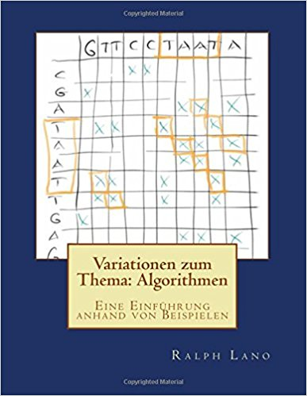

Variationen zum Thema:
Algorithmen
von Ralph P. Lano, 1. Auflage
Für wen
das Buch richtet sich an Bachelor-Studierende im zweiten oder dritten Semester, aber auch an alle anderen die Spaß an kniffligen Problemen haben. Dieses Buch hat auch wieder viele Bilder, aber wie die Seitenanzahl andeutet, kommt auch hier viel Arbeit auf Sie zu. Aber wenn Sie das erste Buch [1] ausgehalten haben, dann schaffen Sie das hier auch!
Von wem
ich bin seit 2011 Professor für Internetprogrammierung und Multimediaapplikationen im Studiengang MediaEngineering an der Technischen Hochschule Nürnberg. Von 2003 bis 2010 war ich Professor für Softwaretechnik und multimediale Anwendungen an der Hochschule Hof, und von 2010 bis 2011 Professor für Media and Computing an der Hochschule für Technik und Wirtschaft Berlin. Ich promovierte 1996 an der University of Iowa zum Thema 'Quantum Gravity: Variations on a Theme'. Von 1996 bis 1997 war ich Postdoctoral Research Associate am Centre for Theoretical Studies des Indian Institute of Science. In der Zeit von 1997 bis 2003 war ich zunächst bei Pearson Education und später bei der Siemens AG in der Softwareentwicklung und dem Projektmanagement tätig.
Über was
Die Hauptthemen in diesem Buch sind Algorithmen und Datenstrukturen. Die Reihenfolge der Kapitel scheint vielleicht willkürlich, ist sie aber nicht. Ich gehe davon aus, dass die Leser im zweiten Semester sind, also gerade mal eine Vorlesung mit Java gehört haben und erste Schritte in der Objektorientierung unternommen haben, also ohne Stützräder programmieren können. Trotzdem fangen wir mit den einfachsten Algorithmen an, um das Thema etwas aufzuwärmen und uns etwas zu lockern. Dann könnte man zwar schon Rekursionen als nächstes machen, aber das würde viele abschrecken die nicht so mathematisch interessiert sind. Damit alle durchhalten und sehen, man kann da auch viel ohne Mathe machen, kommen die Datenstrukturen. Da gibt es viele schöne kleine Beispiele zu programmieren, die sind auch total nützlich und haben nichts mit Mathe zu tun. Hat man sich dann dran gewöhnt, dass es gar nicht so schlimm ist, kann man sich ein bischen auf was Komplizierteres einlassen, die Rekursion. Die ist zwar erst ein bischen verwirrend, aber es gibt da so viele coole Anwendungen, dass man dadurch motiviert wird sich mit der Materie auseinander zu setzen. Jetzt hat man dann hoffentlich soviel Blut geleckt, dass man sich auf die Algorithmische Analyse einlassen kann. Das ist wohl das trockenste Kapitel, aber auch das wichtigste. Danach geht's dann wieder bergab, weil obwohl die Konzepte leicht komplexer werden, sind die Beispielanwendung auch viel interessanter, und die Motivation kommt wieder von der Anwendungsseite. Dass Bäume vor Graphen kommen ist ganz klar. Und dass ich Bäume unbedingt benötige für die Konzepte wie Text, etc. ist auch klar. Zum Schluß beschäftigen wir uns noch mit ein paar sehr nützlichen algorithmischen Techniken. Und das war's dann auch schon, obwohl es eigentlich dann erst interessant würde...
Wie
lernt man mit Algorithmen umzugehen? Wie alles, durch viel üben! Deswegen ist auch dieses Buch wieder voll mit Übungsbeispielen. Die Veranstaltung so wie ich sie unterrichte besteht aus drei Komponenten: der Vorlesung, der Übung und Hausaufgaben. Die Vorlesung ist zwei Stunden pro Woche und entspricht jeweils dem ersten Teil eines Kapitels im Buch. Ein Kapitel schaffen wir in ca. ein bis zwei Wochen. In den Übungen, die zwei Stunden jede Wochen stattfinden, widmen wir uns dann den Projekten. Dabei schaffen wir zwischen zwei und vier der Projekte pro Übung. In der Übung arbeiten die Studierenden in Teams, meist zu zweit, um sich gegenseitig zu helfen. Die Hausaufgaben werden im zweiwöchentlichen Rhythmus bearbeitet und benötigen ca. 4 bis 5 Stunden. Es ist wichtig, dass die Studierenden alleine an der Hausaufgabe arbeiten.
Wo
finde ich die Beispiele und den Quellcode? Die gibt es auf der Webseite zum Buch: www.VariationenZumThema.de. Auch Updates, Links zur Entwicklungsumgebung, das Buch in elektronischer Version gibt's dort. Das Buch selbst gibt's bei Amazon, erst mal nur in Schwarz-Weiß (billig), die farbigen kauft eh keiner (teuer).
Darf ich
die Beispiele verwenden, oder das Buch kopieren? Dieses Material steht unter der Creative-Commons-Lizenz Namensnennung - Nicht-kommerziell - Weitergabe unter gleichen Bedingungen 4.0 International (CC-BY-NC-SA 4.0) D.h. Sie dürfen das Material in jedwedem Format oder Medium vervielfältigen und weiterverbreiten, das Material remixen, verändern und darauf aufbauen. Aber Sie müssen angemessene Urheber- und Rechteangaben machen, einen Link zur Lizenz beifügen und angeben, ob Änderungen vorgenommen wurden. Diese Angaben dürfen in jeder angemessenen Art und Weise gemacht werden, allerdings nicht so, dass der Eindruck entsteht, der Lizenzgeber unterstütze gerade Sie oder Ihre Nutzung besonders. Sie dürfen das Material nicht für kommerzielle Zwecke nutzen. Und wenn Sie das Material remixen, verändern oder anderweitig direkt darauf aufbauen, dürfen Sie Ihre Beiträge nur unter derselben Lizenz wie das Original verbreiten und Sie dürfen keine zusätzlichen Klauseln oder technische Verfahren einsetzen, die anderen rechtlich irgendetwas untersagen, was die Lizenz erlaubt. Um eine Kopie dieser Lizenz zu sehen, besuchen Sie http://creativecommons.org/licenses/by-nc-sa/4.0/.
Der Quellcode steht unter der MIT License (http://choosealicense.com/licenses/mit/).
Warum
dieses Buch? Gibt es nicht schon genug gute Bücher zu Algorithmen? Auf jeden Fall, z.B. die Bücher von Sedgewick und Wayne [4], Roberts und Zelenski [5] und das Buch von Goodrich und Tamassia [6] sind total super. Natürlich auf Englisch. Und teuer. Aber auch sehr mathematisch angehaucht. Und das ist was dieses Buch versucht nicht zu sein: mathematisch. Vielmehr versucht es eher so ein Bilderbuch zu Algorithmen zu sein. Algorithmen sind echt cool, eigentlich gar nicht so schwer, meistens total intuitiv, aber man muss sie "sehen" und "begreifen" um sie zu verstehen, deswegen die vielen Bilder. Manchmal muss man sie auch gar nicht verstehen, sondern nur wissen wann, wo und wie man sie benutzt, oder welche gibt es denn überhaupt. Für die mathematischen Hintergründe, oder die genauen Herleitungen, gibt es ja schon tausende von guten Büchern. Warum wieder die ACM Library? Man könnte doch auch normales Java nehmen. Drei Gründe: wir kennen sie schon, sie ist total einfach, und erlaubt es uns uns auf das Wesentliche zu konzentrieren: die Algorithmen.
Woher
kommen die Ideen? Ohne Zweifel ist der Stil und der pädagogische Aufbau immer noch inspiriert von Mehran Sahami's Vorlesung [2], die ja wiederum auf dem Buch von Eric Roberts [3] basiert. Die Inhalte sind von mehreren Quellen inspiriert, vor allem der Vorlesung von Julie Zelenski [7] und dem Buch von ihr und Eric Roberts [5]. Aber auch das Buch von Goodrich und Tamassia [6] ist wirklich ausgezeichnet und voller exzellenter Beispiele. Vor allem ist es aber auch viel tiefer gehend als dieses hier. Wir kratzen hier nur ein bischen an der Oberfläche. Noch ein Buch das sehr empfehlenswert ist, ist das von Sedgewick und Wayne [4]. Zu deren Buch gibt es auch einen Website und der ist wirklich voller wunderbarer Beispiele [8]. Ich kann all diese Bücher nur wärmstens empfehlen, sie sind diesem hier weit überlegen.
Code
Dieses Buch hat etwas länger gedauert als geplant. Der Hauptgrund waren die Bäume und Graphen: leider gibt es da keine Bibliotheken, die sowohl leicht zu benutzen sind, als auch unter einer Lizenz stehen, die die einfache Verwendung erlaubt. Deshalb musste ich hier selbst die notwendigen Bibliotheken schreiben. Diese sind unter einer Lizenz die die freie weitere Verwendung erlaubt (MIT), allerdings sind sie nicht besonders gut getestet, d.h., sie sind bestimmt voller Bugs und nur für den Lehrbetrieb geeignet. Auch sind sie mit Sicherheit nicht die schnellsten. Die Didaktik und einfache Verwendbarkeit waren mein Designkriterium. Use at your own risk!
Referenzen
[1] Variationen zum Thema: Java: Eine spielerische Einführung, von Ralph P. Lano
[2] Programming Methodology, CS106A, von Mehran Sahami, https://see.stanford.edu/Course/CS106A
[3] The Art and Science of Java, von Eric Roberts, Addison-Wesley, 2008
[4] Introduction to Programming in Java, von Robert Sedgewick und Kevin Wayne
[5] Programming Abstractions in C++, Eric S. Roberts und Julie Zelenski
[6] Data Structures and Algorithms in Java, M.T. Goodrich und R. Tamassia
[7] Computer Science II: Programming Abstractions, Julie Zelenski, Stanford, http://see.stanford.edu/see/courseinfo.aspx?coll=11f4f422-5670-4b4c-889c-008262e09e4e
[8] Introduction to Programming in Java, Robert Sedgewick und Kevin Wayne, introcs.cs.princeton.edu/java/home/
.